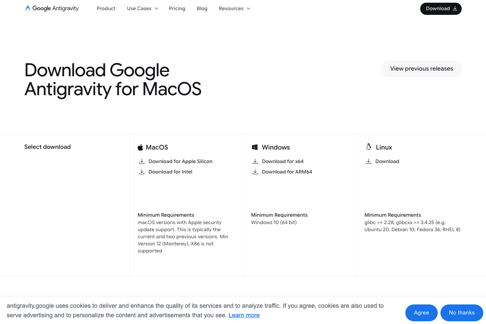

설치 전에 준비
- 개인 Gmail 계정
- Chrome 브라우저
- 로컬 설치 가능한 개인 PC
Tool Guide
Antigravity 설치 가이드. 개인 Gmail 계정 준비. Mac, Windows, 일부 Linux 배포판에서 로컬 설치 필요
설치 전에 준비
공식 안내
Google 공식 codelab 기준, 로컬 설치형, 다운로드 페이지에서 운영체제에 맞는 버전 선택

설치 순서
첫 실행 후
브라우저 설정
Setup 흐름 따라가기, Chrome 확장 설치 화면으로 이동, 처음엔 안내대로 진행
처음 해볼 것
큰 프로젝트보다 짧은 작업 먼저, 폴더 열기, 화면 읽기, 간단한 파일 생성부터
브라우저 확장
Browser agent 사용 시 Chrome 확장 필요, 처음엔 Setup 흐름 따라가기, 필요하면 수동 추가
자주 막히는 경우
공식 링크